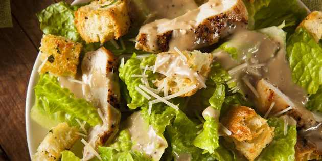

12 смачних страв, які можна приготувати за півгодини
Експрес-рецепти, з яких можна зібрати повноцінний званий обід.

Наталія Копилова
Салат із тунця
Салат-рекордсмен за швидкістю приготування, процес займе декілька хвилин.

Інгредієнти:
- 1 банка консервованого тунця в власному соку;
- 1 банка консервованої фасолі;
- 2 великі солоні огірки;
- 1 великий свіжий огірок;
- ½ луковини;
- 1 столова ложка оцту;
- 2 столові ложки рослинної олії.
Приготування
Почніть з лука. Наріжте його напівкільцями, обваріть кип'ятком і залийте розбавленим за інструкцією оцтом (зазвичай вказано на упаковці). Відставте від нього, нехай маринується. У цей час наріжте огірки, злийте рідину з фасолі, виймайте тунця з банки і розламайте його виделкою на шматочки.
Змішайте інгредієнти. Вийміть лук із оцту і додайте до салату. Полийте суміш олією, щедро поперчіть. Ось з солювати варто обережно: огірки і тунець вже внесли свій внесок.
2. Псевдоцезар
Гурмани можуть скільки завгодно котітися від задоволення, але коли швидкість виходить на перший план, заважати саморобний соус "Цезар" просто немає часу. Тому на допомогу спішить майонез.

Інгредієнти:
- 1 качан салату айсберг;
- 2 філе курячого грудка;
- 3 столові ложки олії;
- 3 ломтики батона;
- 1 зубчик часнику;
- 50 г сиру;
- 2 столові ложки майонезу.
Приготування
Дрібні кусочки філе обсмажте на 1,5 ложки олії до готовності. На сусідній конфорці розігрійте в сковороді олію, натерте туди часник, зажарте нарізаний кубиками батон. Якщо є час, перед тим відріжте від хліба корку.
Нарвіть айсберг в миску руками, викладіть зверху курку, сухарики, натріть сир, заправте майонезом. Якщо подавати салат не відразу, майонез розміщуйте між айсбергом і куркою, так він не пропитає сухарів і вони залишаться хрусткими.
Додайте кілька нарізаних пополам томатів черрі, щоб отримати більш соковитий варіант салату.
3. Салат з копченою ковбасою
Цей салат абсолютно без вишуканості, але швидкий і смачний.

Інгредієнти:
- 200 г копченої ковбаси;
- ½ невеликого качана капусти;
- 2 великих помідори;
- 1 банка консервованого зеленого горошку;
- 4 столові ложки майонезу.
Приготування
Ковбасу та помідори наріжте соломкою, капусту нашинкуйте, додайте горошок і заправте майонезом. Не забудьте поперчити, так смачніше.
Супи
Приготування супу зазвичай тривале через необхідність відварити м'ясо та отримати бульйон. Але є варіанти, де ця проблема вирішена. Якщо потрібно прискорити процес, нагрівайте воду не на плиті, а в електричному чайнику і переливайте її в каструлю.
4. Суп з копченостями та чечевицею
Тут важливо правильно вибрати чечевицю. Шукайте ту, яка підходить для супів. В інструкції до приготування на упаковці чечевиці зазвичай пораджено варити близько 20 хвилин.

Інгредієнти:
- 200 г копченостей (курка, бекон, реберця);
- 200 г чечевиці;
- ½ моркви;
- ½ луковиці;
- 1 столова ложка масла.
Приготування
В каструлю покладіть чечевицю та нарізані копченості (якщо використовуєте ребра, відділіть м'яку від кістки), залийте водою, поставте на вогонь. Наріжте цибулю і підсмажте її на сковороді. Після того як вона зарум'яніється, додайте до неї натерту моркву та продовжуйте смажити.
Коли чечевиця буде готова, додайте до каструлі вміст сковороди і прокип'ятіть ще кілька хвилин.
5. Грибний суп-пюре
Цей грибний суп-пюре виявляється також дуже низькокалорійним і підходить для будь-якої зустрічі із здоровим способом життя.

Інгредієнти:
- 300 г шампіньйонів;
- 1 середній кабачок.
Приготування
Наріжте гриби та очищений кабачок, відваріть їх, доки вони не стануть м'якими. Потім поступово перекладайте вміст каструлі у чашу блендера та розмелюйте до стану пюре. Густину регулюйте бульйоном, в якому готувались гриби та кабачок.
Можна додати до супу вершки, але їх слід перед цим попередньо підігріти.
6. Сирний суп з червоною рибою
Це може бути не найбюджетніший варіант супу, але все ще швидкий і смачний.

Інгредієнти:
- 200 г червоної риби;
- 3 картоплини;
- 4 гілочки кропу;
- 3 плавлені сирки.
Приготування
Картоплю наріжте середніми кубиками та відваріть до напівготовності. Додайте до овочевого бульйону розмелений плавлений сир, зачекайте, доки він розчиниться. Положіть нарізану середніми шматочками червону рибу. Доварюйте до готовності, вимкніть вогонь і залиште суп настоятися протягом 5 хвилин.
При подачі посипте кропом, поєднання червоного та зеленого виглядатиме гармонійно на тарілці.
Другі страви
Багатокомпонентні страви готуються тривалий час, а в експрес-рецептах інгредієнти додаються швидко.
7. Куряче філе з ананасом і брокколі
Страва не потребує гарніру, але якщо дуже захочеться, варіть рис.

Інгредієнти:
- 2 філе курячої грудки;
- 3 кільця консервованого ананаса;
- 400 г брокколі;
- 2 столові ложки оливкової олії.
Приготування
Невеликі шматочки курки обсмажте на попередньо змащеній олією сковороді до золотистої коричневої скоринки, додайте нарізані кубиками ананаси та соцвіття брокколі. Помішуючи, доведіть страву до готовності.
9. Свинина в гранатовому соусі
В якості гарніра до цієї страви можна вибрати що завгодно. Якщо ви хочете щось дійсно швидке, спробуйте овес на воді. Якщо є час, приготуйте булгур або рис, вони гарно поєднуються зі солодкістю гранатового соусу.

Інгредієнти:
- 300 г свинини;
- ½ луковиці;
- 2 столові ложки гранатового соусу;
- 1 столова ложка соняшникової олії.
Приготування
Дрібно наріжте свинину — так вона швидше приготується. Обсмажте її на олії разом з луком до напівготовності. Додайте в сковороду гранатовий соус і трохи води, щоб м'ясо тушилося. Якщо гранатовий соус без кислоти, вижміть у свинину трохи лимонного соку, ваша мета — зробити страву не просто солодкою, а кисло-солодкою. І не забудьте поперчити.
Десерти
Не замахуйтеся на триповерховий торт і обмежтеся приготуванням протягом півгодини.
10. Рулет з варенням
З опису рецепту може здаватися, що готувати рулет дійсно швидко і просто, але це так.

Інгредієнти:
- 3 яйця;
- 3 столові ложки муки (90 грамів);
- 3 столові ложки цукру (90 грамів);
- 150 г варення.
Приготування
Без зайвих витрат змішайте в мисці яйця, муку і цукор, але не відзбивайте. Вилейте суміш на покритий пергаментом протвень і розровняйте ложкою. Підпекайте при 200 °C близько 15 хвилин. Приблизно з восьмої хвилини перевіряйте готовність, рулет повинен проспектися, але зберегти еластичність.
Коли тісто приготується, покладіть бісквіт разом із папером на рушник і скотьте в рулет. Потім обережно видаліть папір і дайте тісту остигнути. Після цього розгорніть бісквіт, змастіть варенням і скотьте знову.
11. Слойки з ягодами
Приготування борошняного тіста — це тривалий і вимогливий процес. На щастя, його можна придбати у магазині, що значно полегшує життя.

Інгредієнти:
- 300 г борошняного тіста;
- 1 столова ложка цукру;
- 1 столова ложка крохмалу;
- 1 склянка ягід.
Приготування
Тісто трохи розкатайте, наріжте на квадрати. Ягоди покладіть в сотейник, додайте цукор і крохмаль, розігрійте. Мішайте обережно, щоб зберегти ягоди цілими. Коли цукор розчиниться, зніміть з вогню.
З квадратиків тіста сформуйте невеликі бортики, в центр викладіть ложку начинки. Повторюйте маніпуляції, поки не закінчиться тісто або начинка. Покладіть слойки на пекарську папір, застелений на плиті, і поставте в попередньо розігріту духовку приблизно на 15 хвилин.
12. Грушевий крамбл
Швидкий рецепт для тих, хто любить погорячіше, коли мова йде про десерти.

Інгредієнти:
- 2 груші;
- 50 г вершкового масла;
- 40 г борошна;
- 50 г цукру.
Приготування
Груші вимийте, відчистіть, натріть на крупній терці і переложіть в жаропрочну посуду. Розтерті холодне масло з борошном і цукром, щоб отримати крихту. Це можна зробити руками, але кухонний комбайн з насадкою-ножем значно прискорить процес.
Крихту виберіть поверхню фруктів, запікайте страву при 200 °C, поки тісто не приготується. Подають крамбл теплим, можна додати морозиво.
HTML та CSS Розробка та створення веб-сайтів

Креативний та привабливий шаблон візитки - резюме. Ви можете
використовувати цей шаблон візитки, резюме та портфоліо. Він має перехід на 36 сторінок, 6
колірних схем на вибір.
Смотреть
Шаблон

Адаптивний шаблон для сайту туристичного агентства HTML5 і Bootstrap
4. Це одностраничная тема з елегантним дизайном і красивим зовнішнім виглядом.
Смотреть Шаблон

Адаптивний шаблон медичного сайту, чиста, мінімалістична і красиво
оформлена тема з витонченим зовнішнім виглядом, більше того, шаблон має повну чуйність.
Смотреть Шаблон

Односторінковий лендінг шаблон цільової сторінки медичних добавок,
спеціально розроблений для цільових сторінок, продуктів для схуднення та дієти та багато
чого
іншого.
Смотреть
Шаблон

Односторінковий HTML шаблон швидкого харчування та ресторанів,
преміальний та сучасний шаблон HTML5 та CSS3, який можна використовувати для створення
будь-якого сайту для різних сценаріїв.
Смотреть
Шаблон